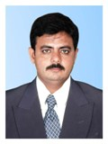
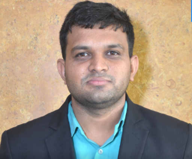
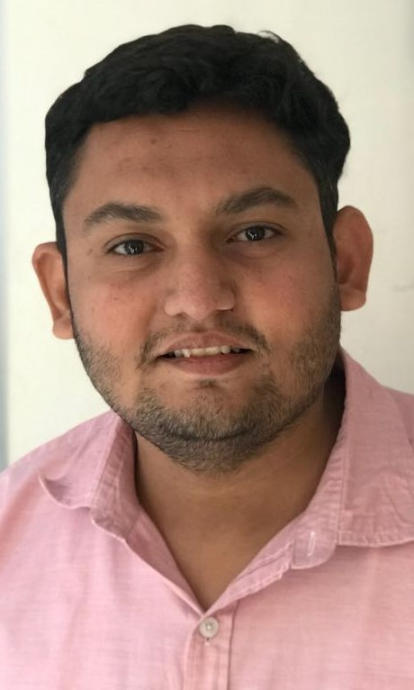
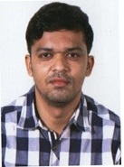
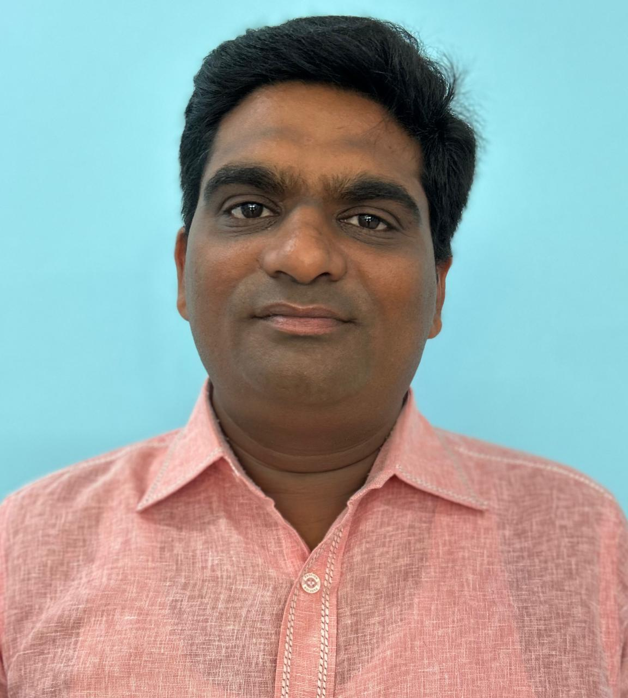
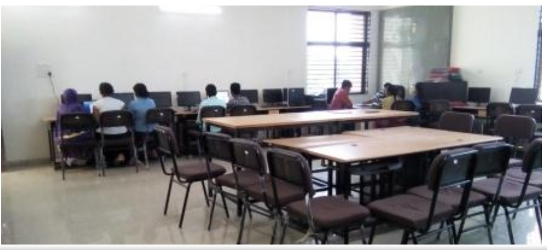
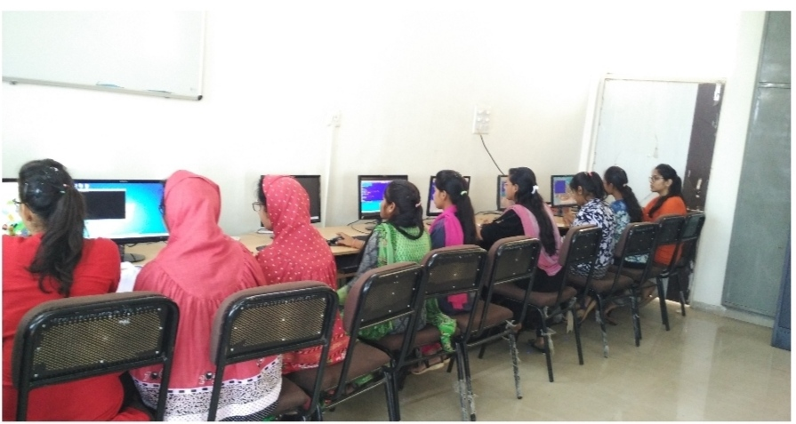
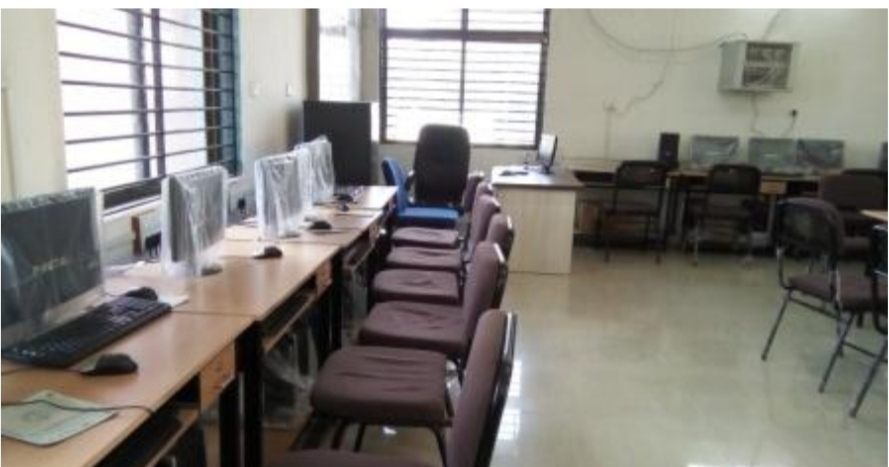

COMPUTER ENGINEERING
Program Details
PROGRAM OFFERS 3 YEARS DIPLOMA COURSE ON
SEMESTER BASED PATTERN.
Student Intake : 120
Teaching Methodology:
The Program combines classroom teaching theory
session and practical training on application
level during practical session.
Award of Degree:
Diploma in Computer Engineering will be
awarded by Gujarat Technological University on
successful completion of 3 years program.
VISION:
To prepare competent rural youth by catering skills
and technical expertise in computer field through
conductive learning environment.
MISSION:
M1:To implant professional attitude, moral values,
technical expertise and innovative capabilities.
M1:To prepare skilled Computer Engineers for specialized
career along with higher studies.
M1:To enhance liasion with industry and academic for
maximum exchange of knowledge and skills.
Programme Educational Objectives(PEOs):
PEO-1To become skilled employees who can discover and
provide computerized solutions to real-life problems
which are economically viable and socially acceptable.
PEO-2To develop expertise as professional engineers while
analyzing, designing, testing, and solving engineering
problems.
PEO-3To become competent by up gradation of technical and
soft skills for continous professional development.
Programme Specific Objectives(PSOs):
PSO-1 Use software engineering practices to develop
and test software solutions and mobile applications
for real-life problems.
PSO-1 Design, deploy and maintain network, hardware
security solutions.
PSO-1 Implement policies and maintain database as
database administrator.
Programme Objectives(POs):
PO-1: Basic and Descipline specific knowledge: Identify and analyse well-defined engineering
problems using codified standard methods.
PO-2: Design/Development of solutions: Design solutions for well-defined technical problems
and assist with the design of systems components or
processes to meet specified needs.
PO-3: Problem Analysis: Identify and analyse well-defined engineering
problems using codified standard methods.
PO-4: Engineering Tools, Experimentation and Testing: Apply modern engineering tools and appropriate
technique to conduct standard tests and measurments.
PO-5: Engineering practices for society, sustainability and environment: Apply appropriate technology in context
of society, sustainability, environment
and ethical practices.
PO-6: Project Management: Use engineering management principles individually,
as a team member or a leader to manage projects
and effectively communicate about well-defined
engineering activities.
PO-7: Life-long Learning: Ability to analyze individual needs and engage
in updating in the context of technological changes.
FACULTY

Mr. SUNILKUMAR SOLANKI

Mr. JITENDRAKUMAR PATEL
Ms. VIRAL BHABHOR

Mr. PARINKUMAR PARGI

Mr. PARESHKUMAR PATEL

Mr. VINAY VIRADIA

Mr. SUNILKUMAR RATHAVA

Mr. MEHULKUMAR PATEL
LABS

LAB-1(Advanced Programming Lab)
A good programmer should know the design priciples of Operating
System and Compilers. Linux OS is used in the lab for this purpose.
The experiments include process handling, IPC, concurrency control,
process scheduling, deadlock handling, and implementation of different
phases of compiler and assembler.

LAB-2(Advanced Database Lab)
Advanced Database Lab is used to conduct database and algorithm
related courses like DBMS, ADBMS, PPUD, and Data Structure.

LAB-3(Basic Programming Lab)
This lab provides fundamental knowledge on various plateforms
such as LINUX, UNIX, DOS, and Windows. Exposure to problem solving
and programming methodologies are provided. Laboratory sessions of
programming in PYTHON and JAVA are conducted here.

LAB-4(Hardware and Network Lab)
Experiments conducted in this lab include familiarisation with
PC components and assembling and maintenance of Computer systems.
Lab sessions are provided to first year students to familarise with
motherboard, processors, expansion slots, power supply units etc.
This lab is also used to conduct Assembly Language Programming sessions.
Low level Programming with 8085 and HEX keyboard are handled in this lab.
The lab has five 8085 trainer kits, 20 computer.